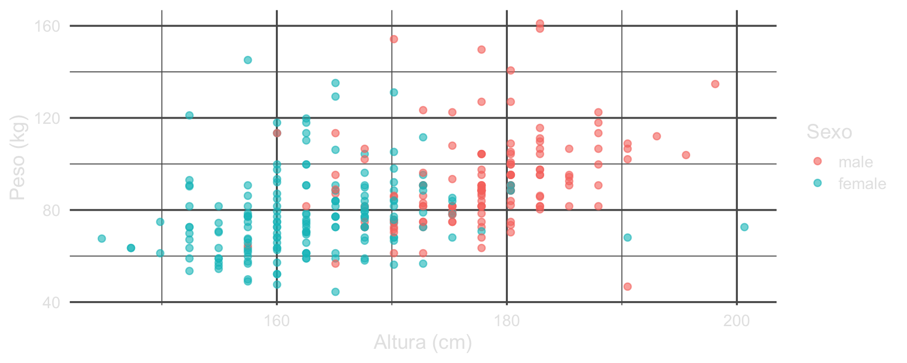
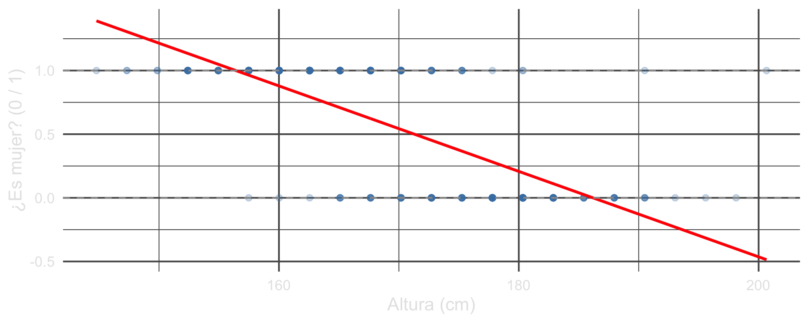
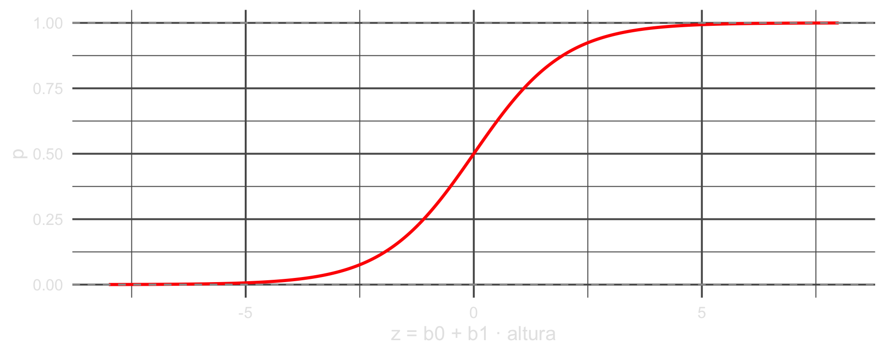
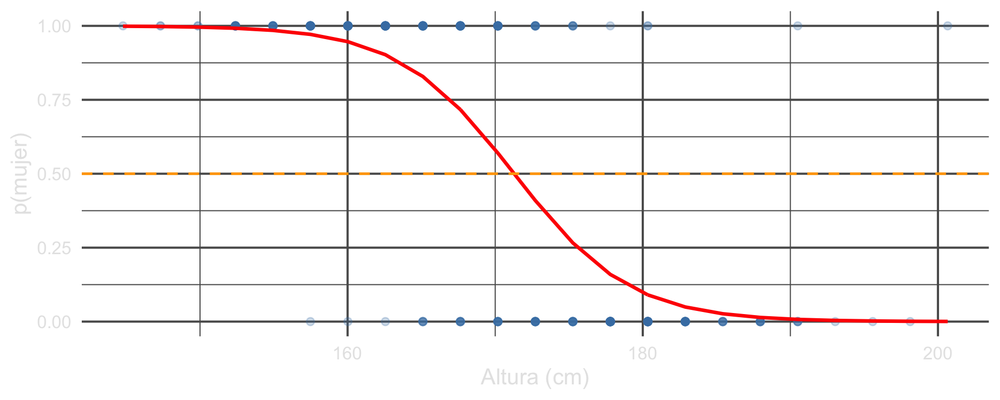
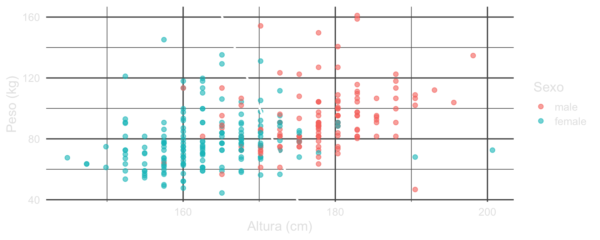
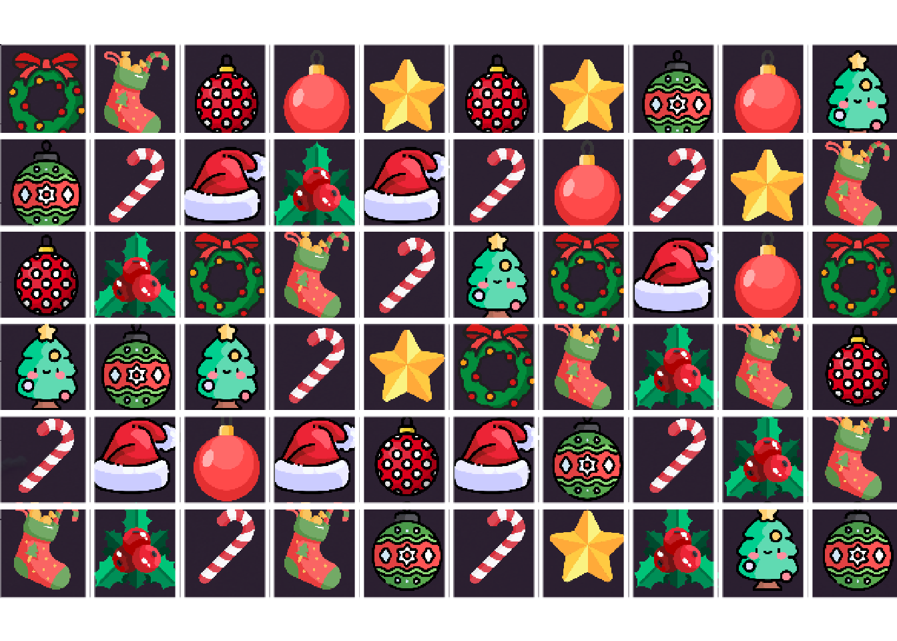

Seminario Experimental Inteligencia Artificial
2026-10-05
Revisión de entregas (en vivo)
Clasificar: dos clases
Extensión: diez clases en un tablero de juego
Resumen
Los cuatro juegos están publicados y se juegan desde el navegador:
https://dietrichson.github.io/IA-UNSAM-2026/juegos/
Breakout, Ahorcado, Memotest, Ta-te-ti.
Los miramos en vivo: ¿corre? ¿se entiende? ¿qué le pidieron al modelo?
Queda un PR pendiente de correcciones. Lo vemos también.
En la presentación 5 usamos estos mismos datos para predecir el peso a partir de la altura:
Hoy cambiamos la pregunta. La respuesta ya no es un número: es una categoría.
¿Esta persona es varón o mujer?

# Codificamos la respuesta como 0/1 y le ajustamos una recta.
personas$es_mujer <- as.integer(personas$sex == "female")
recta <- lm(es_mujer ~ height, data = personas)
ggplot(personas, aes(height, es_mujer)) +
geom_point(alpha = 0.25, colour = "steelblue") +
geom_line(aes(y = fitted(recta)), colour = "red", linewidth = 1.2) +
geom_hline(yintercept = c(0, 1), linetype = "dashed", colour = "grey60") +
labs(x = "Altura (cm)", y = "¿Es mujer? (0 / 1)")
1 2 3 4
1.3827464 1.2148732 -0.1281130 -0.4638596 [1] 43La recta no sabe que la respuesta sólo puede valer 0 o 1. De 300 observaciones, 43 caen fuera. Una probabilidad de −0,46 no significa nada.
# plogis() es la sigmoide: aplasta cualquier numero dentro de (0, 1).
z <- seq(-8, 8, length.out = 300)
ggplot(data.frame(z, p = plogis(z)), aes(z, p)) +
geom_line(colour = "red", linewidth = 1.2) +
geom_hline(yintercept = c(0, 1), linetype = "dashed", colour = "grey60") +
labs(x = "z = b0 + b1 · altura", y = "p")
\[p = \frac{1}{1 + e^{-(\beta_0 + \beta_1 x)}}\]
| Símbolo | Qué es |
|---|---|
| \(x\) | El predictor. Acá, la altura en cm. |
| \(\beta_0\), \(\beta_1\) | Los dos números que el modelo aprende. |
| \(\beta_0 + \beta_1 x\) | Una recta, igual que en la regresión lineal. |
| \(e^{-(\cdot)}\) | La exponencial que aplasta esa recta. |
| \(p\) | La probabilidad de una de las dos clases. Siempre entre 0 y 1. |
Adentro hay un modelo lineal. Lo único nuevo es la función que lo envuelve.
(Intercept) height
43.6899735 -0.2550736 El coeficiente de height es negativo: cuanta más altura, menos probabilidad de female.
| height | p_mujer |
|---|---|
| 150 | 0.996 |
| 160 | 0.947 |
| 170 | 0.581 |
| 175 | 0.279 |
| 185 | 0.029 |
En 170 cm el modelo todavía duda: 0,581. En 185 cm ya casi no.

Por arriba de 0,5 decimos female; por abajo, male.
predicho
real female male
male 24 109
female 149 18Si llamamos positivo a female, que es la clase cuya probabilidad modelamos:
Falso positivo: un varón clasificado como mujer. Acá, 24.
Falso negativo: una mujer clasificada como varón. Acá, 18.
(Intercept) height weight
43.76051154 -0.24545232 -0.02016655 Con dos predictores la frontera deja de ser un punto sobre la altura y pasa a ser una recta en el plano altura–peso.
La frontera es el conjunto de puntos donde el modelo duda, es decir \(p = 0{,}5\). Eso pasa cuando el exponente vale cero:
\[\beta_0 + \beta_1 h + \beta_2 w = 0\]
Despejamos el peso:
\[w = -\frac{\beta_0}{\beta_2} - \frac{\beta_1}{\beta_2}\,h\]

Casi vertical: el peso casi no mueve la frontera.
exactitud <- function(m) {
pr <- ifelse(predict(m, type = "response") > 0.5, "female", "male")
mean(pr == personas$sex)
}
knitr::kable(data.frame(
modelo = c("sex ~ height", "sex ~ height + weight"),
parametros = c(length(coef(modelo)), length(coef(modelo2))),
exactitud = c(exactitud(modelo), exactitud(modelo2))
), digits = 3)| modelo | parametros | exactitud |
|---|---|---|
| sex ~ height | 2 | 0.860 |
| sex ~ height + weight | 3 | 0.857 |
Agregar el peso empeora la exactitud: 258 aciertos contra 257. Un predictor más no es automáticamente un modelo mejor.
umbrales <- do.call(rbind, lapply(c(0.3, 0.5, 0.7), function(u) {
pr <- ifelse(p > u, "female", "male")
data.frame(
umbral = u,
exactitud = mean(pr == personas$sex),
falsos_positivos = sum(pr == "female" & personas$sex == "male"),
falsos_negativos = sum(pr == "male" & personas$sex == "female")
)
}))
knitr::kable(umbrales, digits = 3, row.names = FALSE)| umbral | exactitud | falsos_positivos | falsos_negativos |
|---|---|---|---|
| 0.3 | 0.847 | 36 | 10 |
| 0.5 | 0.860 | 24 | 18 |
| 0.7 | 0.840 | 15 | 33 |
El modelo no cambió: son las mismas 300 probabilidades. Lo único que se movió es dónde cortamos.
El umbral es una decisión, no una propiedad del modelo. Cuál conviene depende de cuál de los dos errores duele más.
Eso es todo el modelo: dos números.
Con ellos se reconstruye cualquier predicción, para cualquier altura.
Es la misma idea de la presentación 5, donde la recta eran dos parámetros. Cambió lo que hacemos con ellos, no cuántos hay.
Un proyecto anterior del docente: chi2labs/x-mas-3, una IA que juega a un match-3 navideño.
El motor de juego sabe resolver un tablero, pero el tablero está en la pantalla.
No hay acceso al código fuente del juego: sólo capturas de pantalla.
Hay que convertir un PNG en una matriz de 6×10 con el tipo de cada baldosa.
“The real bottleneck in this workflow is the transition from a graphic format (in this case a png format) to a board matrix which Gatai can evaluate.”
—
quarto/computer-vision-model.qmd, línea 50
Abrir el navegador, sacar la captura y hacer las jugadas ya estaba resuelto.
Lo que faltaba era mirar.
Eso es un problema de clasificación: cada baldosa es una de diez clases.

Se recorta el tablero, se calculan los centroides de la grilla (R/calculate-centroid-coordinates.R) y queda un rectángulo por baldosa: 6 filas × 10 columnas.
R/screenshot-get-tile.R, líneas 20–33:
Los valores por defecto de la función: tile_width = 68, tile_height = 69.
R/color-analysis.R, líneas 51–74. Por baldosa: media y desvío de R, G y B sobre toda la imagen, más la media de R, G y B en cada uno de cuatro sectores.
Una baldosa de 68×69 píxeles en color son \(68 \times 69 \times 3 = 14.076\) números.
Después del análisis de color quedan 18.
Nadie aprendió esa reducción: la escribió una persona que miró las baldosas y decidió que el color promedio y cuatro sectores alcanzaban para distinguirlas. Es la misma decisión que en la presentación 8 separaba un agente que aprende de uno que no.
Con dos clases alcanzaba una sigmoide. Con diez clases el modelo calcula un puntaje por clase y después los normaliza:
\[p_k = \frac{e^{z_k}}{\sum_j e^{z_j}}\]
| Símbolo | Qué es |
|---|---|
| \(k\) | Una de las diez clases. |
| \(z_k\) | El puntaje de esa clase: otra vez \(\beta_0 + \beta_1 x_1 + \dots\) |
| \(e^{z_k}\) | Lo vuelve positivo. |
| \(\sum_j e^{z_j}\) | Divide por el total, así los diez suman 1. |
| \(p_k\) | La probabilidad de la clase \(k\). |
Se queda con la más alta. Es la misma idea de coeficientes, diez veces.
quarto/multinomial-logistic-regression.qmd, línea 24:
“given the very restricted space, and the presumably very small within-class differences […] we decided that multinomial logistic regression would be the correct choice.”
El ~ . son los 18 rasgos de color. La variable class son las diez clases.
254 baldosas etiquetadas a mano, en inst/training-data/:
| Clase | Baldosas | Clase | Baldosas |
|---|---|---|---|
| candy | 37 | stocking | 26 |
| striped | 31 | tree | 25 |
| wreath | 30 | star | 23 |
| berries | 28 | hat | 21 |
| red | 18 | spotted | 15 |
Diez clases, 254 ejemplos. La clase más chica tiene 15.
El modelo guardado es inst/vision-model.rds: 33 KB.
Diez clases, una de referencia, quedan 9 filas de coeficientes.
Cada fila tiene una ordenada más los 18 rasgos: 19 números.
\(9 \times 19 = 171\) números. Eso es el modelo entero.
Dos números clasificaban personas por altura. Ciento setenta y uno clasifican baldosas en diez clases. En el medio no cambió el tipo de modelo: cambió cuántas veces se repite.
“In total we ran 526 unseen tiles through the model with perfect precision.”
526 baldosas que el modelo nunca había visto, todas bien clasificadas. El control fue visual: se agruparon por clase predicha y se buscó la que desentonaba.
“given the paucity of traning data […] I chose to use all the classified data”
No hubo partición de entrenamiento y prueba. Eso no es una evaluación formal: 526 aciertos revisados a ojo son un indicio fuerte, no una medida. Nadie reportó una exactitud sobre un conjunto reservado, porque no se reservó ninguno.
Comparar byte por byte contra baldosas de referencia. Falló: “there exist minute differences between like tiles, probably due to imprecisions introduces when cropping”.
Una red en Keras sobre los píxeles crudos, escalados a 72×72×3. El intento está en docs/image-classification-model-training.qmd, con las capas convolucionales comentadas. No reporta ningún resultado ni deja un modelo guardado.
Un error encontrado después de entrenar: “Instead of dividing the image into quadrants which was my intention, they were divided into quarters from the top.” Los “cuadrantes” eran franjas horizontales. Se dejó así, porque el modelo ya funcionaba.
Las tres están escritas en el repositorio, no en una nota al pie. Un rasgo que resultó ser otra cosa y aun así funcionó es un dato sobre el problema, y hay que poder encontrarlo.
Clasificar es predecir una categoría en vez de un número.
La regresión logística es un modelo lineal pasado por una sigmoide: adentro hay una recta.
El umbral es una decisión nuestra, no una propiedad del modelo. Moverlo cambia qué error cometemos.
Con más clases es la misma idea: un puntaje por clase y softmax elige el mayor.
Un predictor más no es automáticamente un modelo mejor.
Los rasgos elegidos por una persona pueden ganarle a los píxeles crudos cuando el problema es chico. 18 números bien elegidos, 254 ejemplos, 171 coeficientes, 33 KB.
Hay que evaluar sobre datos que el modelo no vio. 526 aciertos revisados a ojo no son una exactitud sobre un conjunto reservado, y conviene decirlo así.
Las dos lecciones tiran para lados distintos. La primera dice que pensar el problema rinde; la segunda, que pensarlo no alcanza para saber si funcionó.
Cuando los rasgos no se pueden elegir a mano, hay que aprenderlos. Eso es lo que hace una red convolucional con los píxeles crudos.
Y hace falta mucha más data que 254 ejemplos.
La pregunta abierta: ¿cómo se mide un clasificador cuando etiquetar un ejemplo cuesta tiempo de una persona?